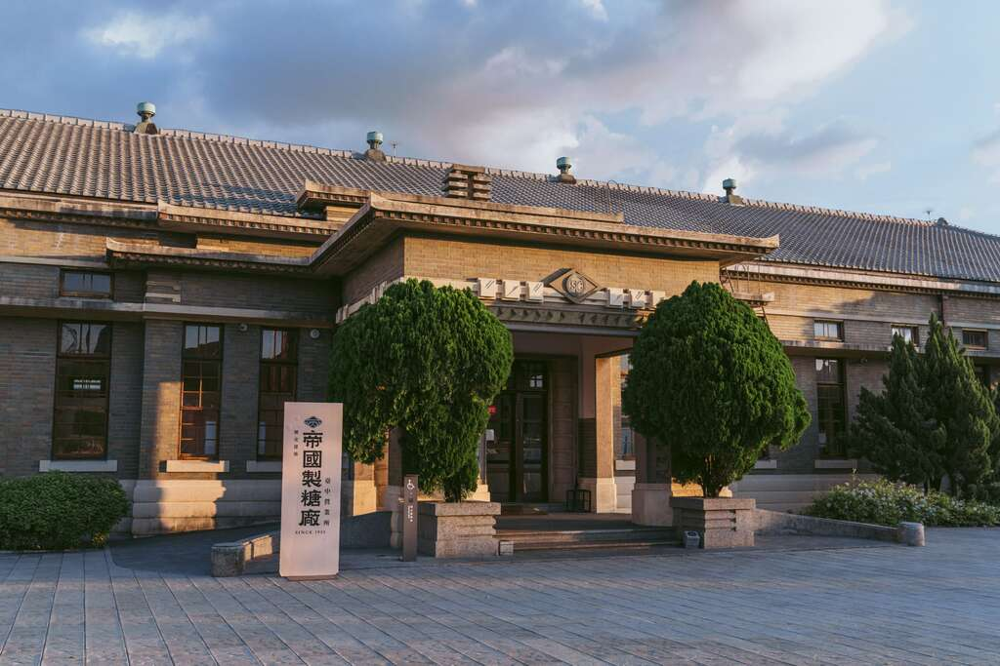

五脊四披頂
鋼筋混凝土建造，屋頂為五脊四披的形式。
一棟糖業辦公廳舍，經歷高壓運作與停擺，再以新的樣貌繼續前行。
全區僅存的日治糖業建築
帝國製糖廠臺中營業所坐落於臺中市東區，主體興建於 1935 年， 前身是日本帝國製糖株式會社臺中本社的辦公廳舍，也是全區僅存的日治糖業建築。
2019 年經臺中市政府修復完成並對外開放，結合周邊約 6 公頃的湧泉公園（星泉湖生態公園）， 轉型為涵蓋產業文化展演、特色餐飲空間與職人創意體驗的複合式園區。
從製糖現場到城市綠洲
| 年份 | 事件 |
|---|---|
| 1935 | 營業所主體興建，作為帝國製糖臺中本社辦公廳舍 |
| 2007 | 登錄為歷史建築 |
| 2019 | 修復完成，結合湧泉公園對外開放 |
1930 年代的 Art Deco 裝飾藝術風格
鋼筋混凝土建造，屋頂為五脊四披的形式。
屋身貼國防色面磚，搭配斬石子基座。
門廊帶有幾何飾帶，展現 Art Deco 的裝飾美感。
營業所正面與入口
